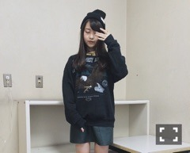
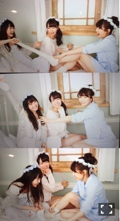
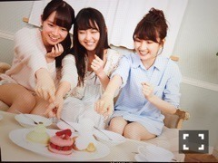

| 2015/12 28 Mon | 花のつくりかた。686 回目 |
今年最後の握手会終了。
名古屋2日間
ありがとうございました！
全国握手会
ミニライブ、隙間歌ったよ〜
聴いてる内に好きになってきます。
振り付けも素敵です。
全握ペアは絢音ちゃんとでした！
最近会う度可愛いと言っていた(^-^)
このペアは自分にとって
タイムリーだった！！あざす！！
来てくださった皆さん
ありがとうございました。
...
個別握手会

ビーニー帽 NewEra
付け襟 vintage
スウェット used
スカート ZARA

ベレー帽 KBF
ニット jouetie
スカート あちゃちゅむ
ブーツ Dr.Marten×Y's
正面からだと全身黒だけど
後姿で赤があるとわかるよ〜
今年の挨拶ができた！
この1年でたくさんの人に
来ていただけるようになりました。
そのきっかけが
今年始まったことばかりでした。
映画や舞台、MdN連載、、
自分をきっかけに
グループを好きになってくれた方も
いらっしゃいました。
まだ不思議な気持ちですが、
そうなりたかった。
なので心から嬉しい。
来年、もっと活動の幅を増やして
たくさんの人に興味を持って
頂けたらいいな＼(^o^)／
そして、変わらず
いつも応援してくれる皆さん
本当にありがとう！
B.L.T.、FLASHスペシャル発売中。
29日発売のBUBKAは
ソログラビアです〜

FLASHスペシャル
あの3人。
ライブ終わりのらじらー
楽しかったなあ
また呼んでいただきたい、、

どのケーキを食べたいか
指を差した結果が見事だった
まりか
コメント(381)
2015/12/28 11:06